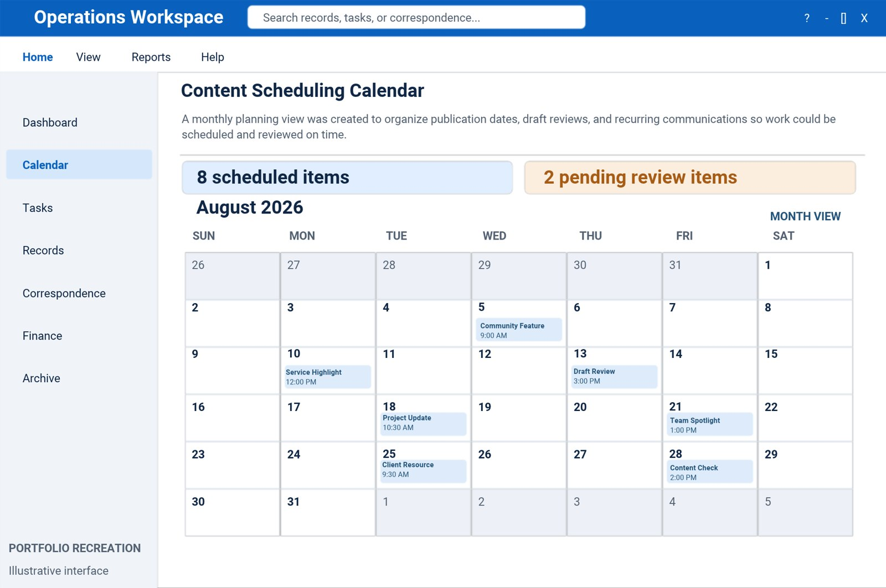
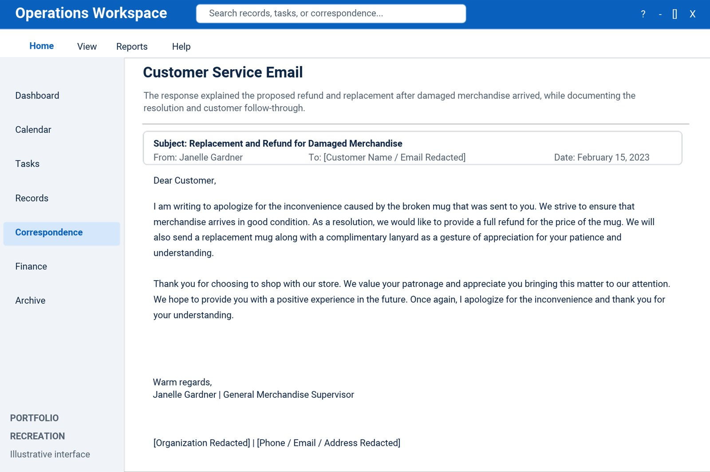
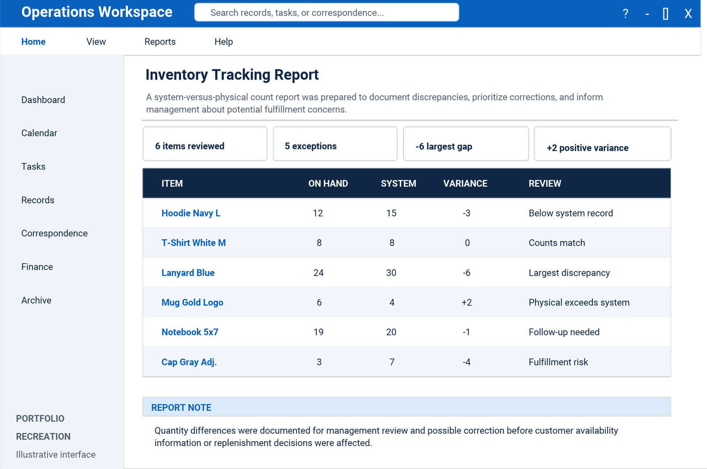
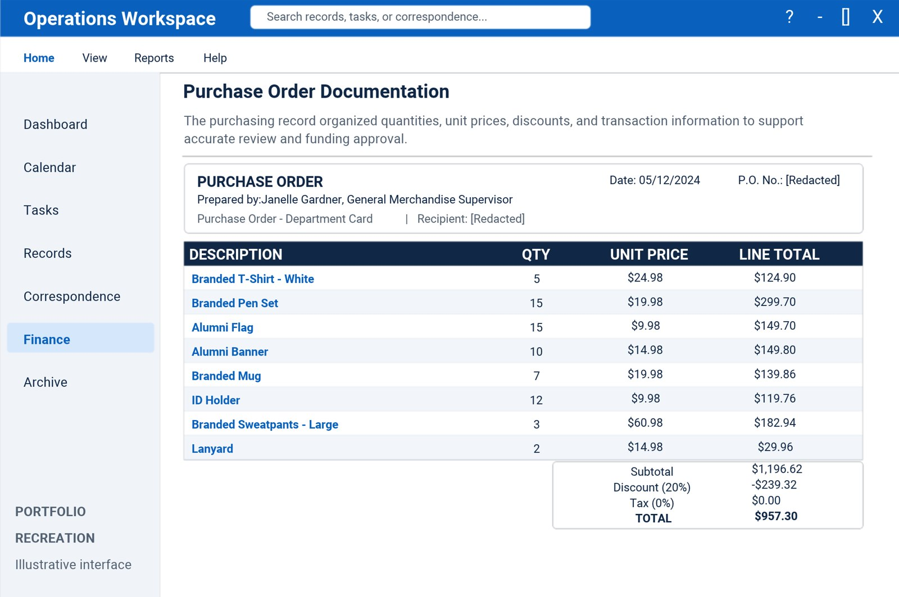

Administrative & Operations
These work samples show how I organize information, communicate with stakeholders, and document day-to-day operations.
Content Coordination

Customer Correspondence

Inventory Tracking

Purchase Order Documentation
